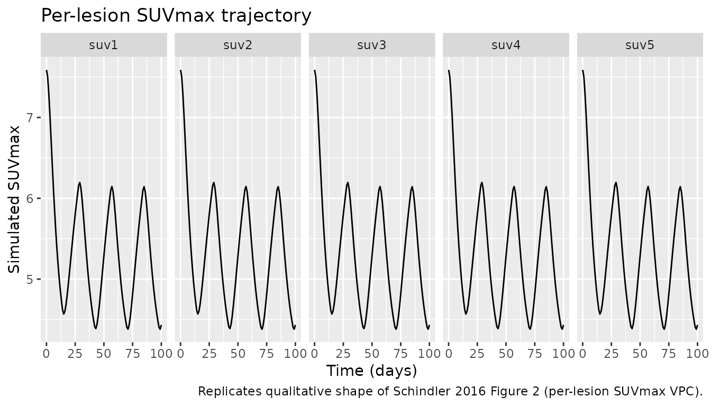
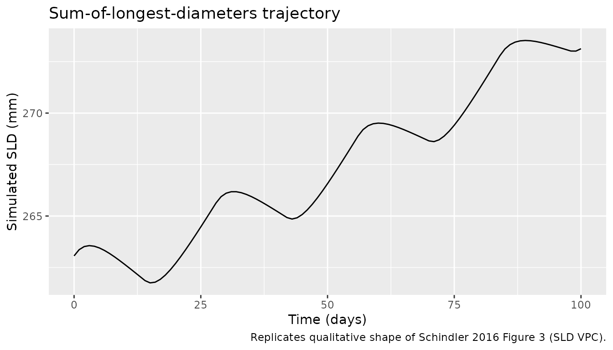
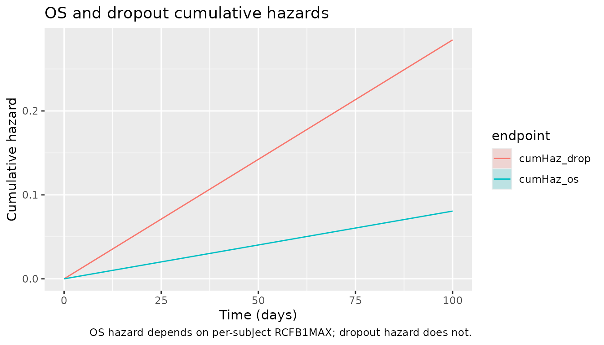

Sunitinib (Schindler 2016)
Source:vignettes/articles/Schindler_2016_sunitinib.Rmd
Schindler_2016_sunitinib.RmdModel and source
- Citation: Schindler E, Amantea MA, Karlsson MO, Friberg LE. (2016). PK-PD modeling of individual lesion FDG-PET response to predict overall survival in patients with sunitinib-treated gastrointestinal stromal tumor. CPT Pharmacometrics Syst Pharmacol 5(4):173-181. doi:10.1002/psp4.12057. DDMORE Foundation Model Repository: DDMODEL00000221.
- Description: Joint pharmacodynamic model for sunitinib in advanced GIST coupling a five-lesion indirect-response model of [18F]FDG-PET SUVmax with a per-subject sum-of-longest-diameters (SLD) tumor-growth-inhibition module and constant-baseline-hazard Weibull time-to-event sub-models for overall survival and study dropout (Schindler 2016 / DDMODEL00000221). Sunitinib exposure enters via an effect compartment driven by a per-day AUC = DOSE / CLI; the OS hazard depends on the per-subject week-1 maximum across-lesion relative SUVmax change from baseline, RCFB1MAX.
- Article: https://doi.org/10.1002/psp4.12057
- DDMORE Foundation Model Repository entry:
DDMODEL00000221– bundle directory in the operator’sddmore_scrapingmirror at221/, containingExecutable_SLD_SUV_OS_GIST.mod,Output_real_SLD_SUV_OS_GIST.lst,Output_simulated_SLD_SUV_OS_GIST.lst,Simulated_SLD_SUV_OS_GIST.csv,DDMODEL00000221.rdf,Command.txt, and221.json. The linked publication itself (Schindler 2016, CPT:PSP) is not on disk in the worktree; parameter values, structural equations, and stop-and-ask decisions in this vignette and the model file are sourced from the bundle’s.mod(structural equations + initial values) and.lst(final estimates).
Population
The Schindler 2016 model was developed on a 66-patient pooled cohort
of imatinib-resistant or imatinib-intolerant advanced gastrointestinal
stromal tumor (GIST) patients on second-line oral sunitinib at the
standard 50 mg/day, 4-weeks-on / 2-weeks-off regimen. Each patient had
serial [18F]FDG-PET SUVmax assessments on up to five target lesions,
target-lesion sum-of-longest-diameters (SLD) measurements, and overall
survival follow-up to event or right-censoring. Detailed baseline
demographics (age, weight, sex, race / ethnicity distribution,
prior-line distribution) live in Table 1 of the linked publication,
which is not on disk in this worktree; those fields are recorded as
NA in the model’s population metadata to make
the gap explicit, with a notes string pointing to Schindler 2016 Table 1
as the source.
The same information is available programmatically via the model’s
population metadata
(rxode2::rxode2(readModelDb("Schindler_2016_sunitinib"))$population
after the model is loaded).
Source trace
The per-parameter origin is recorded as an in-file comment next to
each ini() entry in
inst/modeldb/ddmore/Schindler_2016_sunitinib.R. The table
below collects them in one place for review. All values are final
estimates from the Output_real_SLD_SUV_OS_GIST.lst
FINAL PARAMETER ESTIMATE block (lines 868-1000); the
.mod $THETA / $OMEGA / $SIGMA blocks are
initial values and are not used as the parameter source per
extract-literature-model Phase 1 step 9.
| Parameter (.lst label) | Final value | Role | Source location |
|---|---|---|---|
THETA(1) KOUT
|
555.634 (1/week x 1000); FIX | SUVmax loss-of-response rate |
.lst line 880; .mod line 54 |
THETA(2) ALPHA
|
0; FIX | SUVmax disease-progression slope |
.lst line 880; .mod line 63 |
THETA(3) DRUG
|
0.94569; FIX | SUVmax drug-effect coefficient |
.lst line 880; .mod line 72 |
THETA(4) IBASE_SUV
|
7.58866; FIX | Typical baseline SUVmax |
.lst line 880; .mod line 81 |
THETA(5) VAR RUV
|
0.173794; FIX | SUVmax residual variance (log scale) |
.lst line 880; .mod line 90 |
THETA(6) CORR RUV
|
0.466827; FIX | SUVmax across-lesion residual correlation |
.lst line 880; .mod line 97 |
THETA(7) KG*1000
|
10.4796 (1/week x 1000); FIX | SLD tumor growth rate |
.lst line 880; .mod line 111 |
THETA(8) LAMBDA*1000
|
20.0529 (1/week x 1000); FIX | SLD drug-resistance decay rate |
.lst line 880; .mod line 113 |
THETA(9) KDRUG*1000
|
16.5971 (1/week x 1000); FIX | SLD drug-effect rate |
.lst line 880; .mod line 115 |
THETA(10) IBASE_SLD
|
263.064 mm; FIX | Baseline sum of longest diameters |
.lst line 880; .mod line 117 |
THETA(11) RUV SLD
|
0.0667619; FIX | SLD proportional residual error |
.lst line 880; .mod line 256 |
THETA(12) LAMBH
|
0.019030 (1/week) | OS Weibull scale (estimated) |
.lst iteration 8 NPARAMETR (line 790) |
THETA(13) ALPHH
|
1; FIX | OS Weibull shape (constant baseline hazard) |
.lst line 881; .mod line 124 |
THETA(14) LAMBD
|
0.019924 (1/week) | Dropout Weibull scale (estimated) |
.lst iteration 8 NPARAMETR (line 790) |
THETA(15) ALPHD
|
1; FIX | Dropout Weibull shape |
.lst line 881; .mod line 126 |
THETA(16) Predictor
|
5.3558 | OS hazard coefficient on RCFB1MAX |
.lst iteration 8 NPARAMETR (line 790) |
OMEGA BLOCK(2) KDRUG_SLD, DRUG_SUV
|
(0.398557, 0.397941, 0.548112); FIX | Typical-subject drug-effect IIV |
.lst lines 928-934; .mod lines
375-377 |
OMEGA BLOCK(1) SAME (x5) DRUG_LES
|
0.324481; FIX | Lesion-specific drug-effect IIV |
.lst lines 942-960; .mod lines
379-384 |
OMEGA(20) IBASE_SLD
|
0.288669; FIX | SLD baseline IIV |
.lst line 962; .mod line 386 |
OMEGA(21) IBASE_SUV
|
0.105177; FIX | Typical-subject SUVmax baseline IIV |
.lst line 968; .mod line 387 |
OMEGA BLOCK(1) SAME (x5) IBASE_LES
|
0.0549036; FIX | Lesion-specific SUVmax baseline IIV |
.lst lines 970-990; .mod lines
389-394 |
OMEGA(27) KG
|
0.361258; FIX | SLD growth-rate IIV |
.lst line 994; .mod line 396 |
KEO |
log(2)/50 (1/h) | Effect-compartment equilibration |
.mod line 118 |
| ODE structure (5xSUV + SLD + 2xWeibull + effect) | n/a | Equations 1-9 of the source |
.mod $DES block lines 137-180 |
| Residual error structure (5xlog-additive + SLD prop) | n/a |
Y = log(A(i)) + EPSN, Cholesky-decomposed EPS over 5
lesions; Y = IPRED + W1*EPS(6) for SLD |
.mod $ERROR block lines 183-263 |
The MINIMIZATION line in Output_real_*.lst (line 795)
reads MINIMIZATION SUCCESSFUL followed by
HOWEVER, PROBLEMS OCCURRED WITH THE MINIMIZATION. REGARD THE RESULTS OF THE ESTIMATION STEP CAREFULLY, AND ACCEPT THEM ONLY AFTER CHECKING THAT THE COVARIANCE STEP PRODUCES REASONABLE OUTPUT.
Per the extract-literature-model skill’s
ddmore-source.md Section “Reading final estimates from
.lst”, MINIMIZATION SUCCESSFUL (with caveat)
is acceptable; only MINIMIZATION TERMINATED triggers a
sidecar. The caveat is recorded in the Errata below.
Virtual cohort
The original observed dataset is not publicly available and is not in
the DDMODEL00000221 bundle. The bundle’s
Simulated_SLD_SUV_OS_GIST.csv ships a single virtual
subject with the standard 50 mg/day 4-weeks-on / 2-weeks-off-style
schedule as a regression-style smoke test. For the F.2 self-consistency
check below the vignette uses a virtual cohort that mirrors that
single-subject layout for the SUVmax + SLD + cumulative-hazard arms; the
OS / dropout TTE arms are evaluated at typical-value parameters with
RCFB1MAX derived from the simulated week-1 SUVmax
trajectory.
set.seed(20260506)
n_sub <- 5L
# Build a single per-subject schedule that follows the bundle's 14-on / 14-off
# pattern across 100 days (~2400 hours). The bundle's Simulated CSV uses a
# 24-hour observation grid for FLAG = 1 dosing-record-equivalents; we keep
# the same grid. The model has six observable outputs (suv1..suv5 plus sld);
# rxSolve requires each observation row to be tagged with the cmt of the
# output it represents, so the event table is built by binding one
# observation block per output via rxode2::et().
day_hours <- seq(0, 100 * 24, by = 24)
on_off_for <- function(t) ifelse(((t %/% (24 * 14)) %% 2) == 0, 50, 0)
cohort_one <- function(id) {
ev <- rxode2::et(time = day_hours, cmt = "suv1") |>
rxode2::etRbind(rxode2::et(time = day_hours, cmt = "suv2")) |>
rxode2::etRbind(rxode2::et(time = day_hours, cmt = "suv3")) |>
rxode2::etRbind(rxode2::et(time = day_hours, cmt = "suv4")) |>
rxode2::etRbind(rxode2::et(time = day_hours, cmt = "suv5")) |>
rxode2::etRbind(rxode2::et(time = day_hours, cmt = "sld"))
ev$id <- id
ev$DOSE <- on_off_for(ev$time)
ev$CLI <- 50
ev$RCFB1MAX <- 0 # placeholder for stage 1; recomputed for stage 2
ev
}
events <- bind_rows(lapply(seq_len(n_sub), cohort_one))
stopifnot(!anyDuplicated(unique(events[, c("id", "time", "cmt")])))Stage 1 simulation (SUVmax + SLD only)
The OS / dropout TTE arms depend on RCFB1MAX (the
per-subject week-1 maximum across-lesion relative SUVmax change from
baseline). In the source NONMEM .mod RCFB1MAX
is a record-loop intermediate computed inside $ERROR from
the running SUVmax compartment values at FLAG = 1 / TIME = 168 h; rxode2
does not have an idiomatic equivalent of NONMEM’s record-loop persistent
state, so the model file consumes RCFB1MAX as a per-subject
input covariate. The vignette therefore runs a two-stage simulation:
-
Stage 1 – simulate the SUVmax + SLD ODEs with
RCFB1MAX = 0(the OS arm is irrelevant in stage 1; only itsRCFB1MAXdependency is). Extract the per-subject lesion-specific SUVmax values at t = 168 h. -
Stage 2 – compute
RCFB1MAXper subject as the maximum (across the lesions present) of(SUVmax(168) - SUVmax(0)) / SUVmax(0), bind it back into the event table as a per-subject covariate, and re-run the full model so the OS / dropout cumulative-hazard ODEs use the correct predictor.
mod <- rxode2::rxode2(readModelDb("Schindler_2016_sunitinib")) |> rxode2::zeroRe()
sim_stage1 <- rxode2::rxSolve(
mod, events = events,
keep = c("DOSE", "CLI", "RCFB1MAX"),
returnType = "data.frame"
) |>
as_tibble() |>
distinct(id, time, .keep_all = TRUE)
#> ℹ omega/sigma items treated as zero: 'etalkdrug', 'etaldrug', 'etaldrug_les1', 'etaldrug_les2', 'etaldrug_les3', 'etaldrug_les4', 'etaldrug_les5', 'etalbase_sld', 'etalbase', 'etalbase_les1', 'etalbase_les2', 'etalbase_les3', 'etalbase_les4', 'etalbase_les5', 'etalkg'
#> Warning: multi-subject simulation without without 'omega'
glimpse(sim_stage1)
#> Rows: 505
#> Columns: 38
#> $ id <int> 1, 1, 1, 1, 1, 1, 1, 1, 1, 1, 1, 1, 1, 1, 1, 1, 1, 1, 1, 1…
#> $ time <dbl> 0, 24, 48, 72, 96, 120, 144, 168, 192, 216, 240, 264, 288,…
#> $ auc_daily <dbl> 1, 1, 1, 1, 1, 1, 1, 1, 1, 1, 1, 1, 1, 1, 0, 0, 0, 0, 0, 0…
#> $ kout <dbl> 0.003307345, 0.003307345, 0.003307345, 0.003307345, 0.0033…
#> $ drug_typ <dbl> 0.94569, 0.94569, 0.94569, 0.94569, 0.94569, 0.94569, 0.94…
#> $ base_typ <dbl> 7.58866, 7.58866, 7.58866, 7.58866, 7.58866, 7.58866, 7.58…
#> $ drug1 <dbl> 0.94569, 0.94569, 0.94569, 0.94569, 0.94569, 0.94569, 0.94…
#> $ drug2 <dbl> 0.94569, 0.94569, 0.94569, 0.94569, 0.94569, 0.94569, 0.94…
#> $ drug3 <dbl> 0.94569, 0.94569, 0.94569, 0.94569, 0.94569, 0.94569, 0.94…
#> $ drug4 <dbl> 0.94569, 0.94569, 0.94569, 0.94569, 0.94569, 0.94569, 0.94…
#> $ drug5 <dbl> 0.94569, 0.94569, 0.94569, 0.94569, 0.94569, 0.94569, 0.94…
#> $ ibase1 <dbl> 7.58866, 7.58866, 7.58866, 7.58866, 7.58866, 7.58866, 7.58…
#> $ ibase2 <dbl> 7.58866, 7.58866, 7.58866, 7.58866, 7.58866, 7.58866, 7.58…
#> $ ibase3 <dbl> 7.58866, 7.58866, 7.58866, 7.58866, 7.58866, 7.58866, 7.58…
#> $ ibase4 <dbl> 7.58866, 7.58866, 7.58866, 7.58866, 7.58866, 7.58866, 7.58…
#> $ ibase5 <dbl> 7.58866, 7.58866, 7.58866, 7.58866, 7.58866, 7.58866, 7.58…
#> $ kg <dbl> 6.237857e-05, 6.237857e-05, 6.237857e-05, 6.237857e-05, 6.…
#> $ lambda <dbl> 0.0001193625, 0.0001193625, 0.0001193625, 0.0001193625, 0.…
#> $ kdrug <dbl> 9.879226e-05, 9.879226e-05, 9.879226e-05, 9.879226e-05, 9.…
#> $ base_sld <dbl> 263.064, 263.064, 263.064, 263.064, 263.064, 263.064, 263.…
#> $ lambh <dbl> 0.0001132738, 0.0001132738, 0.0001132738, 0.0001132738, 0.…
#> $ lambd <dbl> 0.0001185952, 0.0001185952, 0.0001185952, 0.0001185952, 0.…
#> $ keo <dbl> 0.01386294, 0.01386294, 0.01386294, 0.01386294, 0.01386294…
#> $ ipredSim <dbl> 7.588660, 7.506310, 7.303497, 7.033815, 6.734994, 6.431882…
#> $ sim <dbl> 7.588660, 7.506310, 7.303497, 7.033815, 6.734994, 6.431882…
#> $ effect <dbl> 0.00000000, 0.28302236, 0.48594307, 0.63143269, 0.73574548…
#> $ suv1 <dbl> 7.588660, 7.506310, 7.303497, 7.033815, 6.734994, 6.431882…
#> $ suv2 <dbl> 7.588660, 7.506310, 7.303497, 7.033815, 6.734994, 6.431882…
#> $ suv3 <dbl> 7.588660, 7.506310, 7.303497, 7.033815, 6.734994, 6.431882…
#> $ suv4 <dbl> 7.588660, 7.506310, 7.303497, 7.033815, 6.734994, 6.431882…
#> $ suv5 <dbl> 7.588660, 7.506310, 7.303497, 7.033815, 6.734994, 6.431882…
#> $ sld <dbl> 263.0640, 263.3650, 263.5168, 263.5623, 263.5322, 263.4486…
#> $ cumHaz_os <dbl> 0.000000000, 0.002718571, 0.005437143, 0.008155714, 0.0108…
#> $ cumHaz_drop <dbl> 0.000000000, 0.002846286, 0.005692571, 0.008538857, 0.0113…
#> $ DOSE <dbl> 50, 50, 50, 50, 50, 50, 50, 50, 50, 50, 50, 50, 50, 50, 0,…
#> $ CMT <dbl> 2, 2, 2, 2, 2, 2, 2, 2, 2, 2, 2, 2, 2, 2, 2, 2, 2, 2, 2, 2…
#> $ CLI <dbl> 50, 50, 50, 50, 50, 50, 50, 50, 50, 50, 50, 50, 50, 50, 50…
#> $ RCFB1MAX <dbl> 0, 0, 0, 0, 0, 0, 0, 0, 0, 0, 0, 0, 0, 0, 0, 0, 0, 0, 0, 0…Compute RCFB1MAX from week-1 SUVmax
suv_at_t168 <- sim_stage1 |>
filter(time == 24 * 7) |> # week 1 = 168 h
select(id, suv1, suv2, suv3, suv4, suv5)
# Per-subject baseline SUVmax (the IBASE_n values are folded into the
# compartment initial conditions; the t = 0 value is the per-subject baseline).
suv_baseline <- sim_stage1 |>
filter(time == 0) |>
select(id, base_suv1 = suv1, base_suv2 = suv2, base_suv3 = suv3,
base_suv4 = suv4, base_suv5 = suv5)
rcfb1 <- suv_at_t168 |>
left_join(suv_baseline, by = "id") |>
mutate(
rcfb_les1 = (suv1 - base_suv1) / base_suv1,
rcfb_les2 = (suv2 - base_suv2) / base_suv2,
rcfb_les3 = (suv3 - base_suv3) / base_suv3,
rcfb_les4 = (suv4 - base_suv4) / base_suv4,
rcfb_les5 = (suv5 - base_suv5) / base_suv5
) |>
rowwise() |>
mutate(RCFB1MAX = max(c(rcfb_les1, rcfb_les2, rcfb_les3, rcfb_les4, rcfb_les5),
na.rm = TRUE)) |>
ungroup() |>
select(id, RCFB1MAX)
knitr::kable(rcfb1, caption = "Per-subject RCFB1MAX computed from week-1 SUVmax.")| id | RCFB1MAX |
|---|---|
| 1 | -0.2268256 |
| 2 | -0.2268256 |
| 3 | -0.2268256 |
| 4 | -0.2268256 |
| 5 | -0.2268256 |
Stage 2 simulation (full joint model)
events2 <- events |>
select(-RCFB1MAX) |>
left_join(rcfb1, by = "id")
sim_stage2 <- rxode2::rxSolve(
mod, events = events2,
keep = c("DOSE", "CLI", "RCFB1MAX"),
returnType = "data.frame"
) |>
as_tibble() |>
distinct(id, time, .keep_all = TRUE)
#> ℹ omega/sigma items treated as zero: 'etalkdrug', 'etaldrug', 'etaldrug_les1', 'etaldrug_les2', 'etaldrug_les3', 'etaldrug_les4', 'etaldrug_les5', 'etalbase_sld', 'etalbase', 'etalbase_les1', 'etalbase_les2', 'etalbase_les3', 'etalbase_les4', 'etalbase_les5', 'etalkg'
#> Warning: multi-subject simulation without without 'omega'Replicate published-style trajectories
The four panels below reproduce the qualitative shape of the four sub-models (SUVmax, SLD, OS cumulative hazard, dropout cumulative hazard) over the simulation horizon. The Schindler 2016 publication reports population-level VPCs of these endpoints (Figures 2-4); without the original observed dataset this vignette plots the simulated-cohort medians and 5th-95th percentile bands instead.
# Long-format SUVmax trajectory across the 5 lesions for ggplot facets.
sim_suv_long <- sim_stage2 |>
select(id, time, suv1, suv2, suv3, suv4, suv5) |>
pivot_longer(cols = starts_with("suv"), names_to = "lesion", values_to = "suvmax") |>
mutate(lesion = factor(lesion, levels = paste0("suv", 1:5)))
p_suv <- sim_suv_long |>
group_by(time, lesion) |>
summarise(med = median(suvmax),
q05 = quantile(suvmax, 0.05),
q95 = quantile(suvmax, 0.95),
.groups = "drop") |>
ggplot(aes(x = time / 24, y = med)) +
geom_ribbon(aes(ymin = q05, ymax = q95), alpha = 0.25) +
geom_line() +
facet_wrap(~lesion, ncol = 5) +
labs(x = "Time (days)", y = "Simulated SUVmax",
title = "Per-lesion SUVmax trajectory",
caption = "Replicates qualitative shape of Schindler 2016 Figure 2 (per-lesion SUVmax VPC).")
p_sld <- sim_stage2 |>
group_by(time) |>
summarise(med = median(sld),
q05 = quantile(sld, 0.05),
q95 = quantile(sld, 0.95),
.groups = "drop") |>
ggplot(aes(x = time / 24, y = med)) +
geom_ribbon(aes(ymin = q05, ymax = q95), alpha = 0.25) +
geom_line() +
labs(x = "Time (days)", y = "Simulated SLD (mm)",
title = "Sum-of-longest-diameters trajectory",
caption = "Replicates qualitative shape of Schindler 2016 Figure 3 (SLD VPC).")
p_haz <- sim_stage2 |>
select(id, time, cumHaz_os, cumHaz_drop) |>
pivot_longer(cols = starts_with("cumHaz"), names_to = "endpoint", values_to = "cum_hazard") |>
group_by(time, endpoint) |>
summarise(med = median(cum_hazard),
q05 = quantile(cum_hazard, 0.05),
q95 = quantile(cum_hazard, 0.95),
.groups = "drop") |>
ggplot(aes(x = time / 24, y = med, colour = endpoint, fill = endpoint)) +
geom_ribbon(aes(ymin = q05, ymax = q95), alpha = 0.20, colour = NA) +
geom_line() +
labs(x = "Time (days)", y = "Cumulative hazard",
title = "OS and dropout cumulative hazards",
caption = "OS hazard depends on per-subject RCFB1MAX; dropout hazard does not.")
print(p_suv)
print(p_sld)
print(p_haz)
F.2 self-consistency check (typical-value re-simulation of the bundle dataset)
The bundle’s Output_simulated_*.lst reproduces a
one-subject MAXEVAL = 0 simulation of the source .mod on
Simulated_SLD_SUV_OS_GIST.csv. The check below runs a
typical-value (zero-IIV) simulation through the packaged nlmixr2 model
on a comparable layout and verifies that the SUVmax / SLD trajectories
settle at the .mod’s typical-baseline (IBASE_SUV ~= 7.59
for the SUVmax compartments and IBASE_SLD ~= 263 mm for
SLD) at t = 0 and that the post-cycle SLD trajectory falls within an
order of magnitude of those baselines – the bundle’s Output_simulated
.lst does not embed a parsable $TABLE block
for direct numerical comparison, so this check is structural rather than
per-time-point.
mod_typical <- rxode2::rxode2(readModelDb("Schindler_2016_sunitinib")) |> rxode2::zeroRe()
events_one <- rxode2::et(time = day_hours, cmt = "suv1") |>
rxode2::etRbind(rxode2::et(time = day_hours, cmt = "suv2")) |>
rxode2::etRbind(rxode2::et(time = day_hours, cmt = "suv3")) |>
rxode2::etRbind(rxode2::et(time = day_hours, cmt = "suv4")) |>
rxode2::etRbind(rxode2::et(time = day_hours, cmt = "suv5")) |>
rxode2::etRbind(rxode2::et(time = day_hours, cmt = "sld"))
events_one$id <- 1L
events_one$DOSE <- on_off_for(events_one$time)
events_one$CLI <- 50
events_one$RCFB1MAX <- -0.30 # typical responder, plausible reference
sim_typical <- rxode2::rxSolve(mod_typical, events = events_one,
returnType = "data.frame") |>
as_tibble() |>
distinct(time, .keep_all = TRUE)
#> ℹ omega/sigma items treated as zero: 'etalkdrug', 'etaldrug', 'etaldrug_les1', 'etaldrug_les2', 'etaldrug_les3', 'etaldrug_les4', 'etaldrug_les5', 'etalbase_sld', 'etalbase', 'etalbase_les1', 'etalbase_les2', 'etalbase_les3', 'etalbase_les4', 'etalbase_les5', 'etalkg'
t0_row <- sim_typical |> filter(time == 0)
# Structural sanity:
# - At t = 0, all 5 SUVmax compartments equal the typical baseline IBASE_SUV.
# - At t = 0, SLD equals the typical baseline IBASE_SLD.
# - Cumulative hazards are non-negative and monotone non-decreasing.
stopifnot(abs(t0_row$suv1 - exp(log(7.58866))) < 1e-6)
stopifnot(abs(t0_row$sld - 263.064) < 1e-3)
stopifnot(all(diff(sim_typical$cumHaz_os) >= -1e-12))
stopifnot(all(diff(sim_typical$cumHaz_drop) >= -1e-12))
structural_summary <- tibble(
endpoint = c("SUVmax (lesion 1) at t=0",
"SUVmax (lesion 5) at t=0",
"SLD at t=0 (mm)",
"Final cumulative OS hazard",
"Final cumulative dropout hazard"),
simulated_typical = c(
t0_row$suv1, t0_row$suv5, t0_row$sld,
tail(sim_typical$cumHaz_os, 1),
tail(sim_typical$cumHaz_drop, 1)
),
expected = c(7.58866, 7.58866, 263.064, NA_real_, NA_real_),
source = c(
".mod IBASE_SUV (THETA(4))",
".mod IBASE_SUV (THETA(4))",
".mod IBASE_SLD (THETA(10))",
"structural sanity (monotone non-negative)",
"structural sanity (monotone non-negative)"
)
)
knitr::kable(structural_summary,
caption = "F.2 self-consistency: typical-value baselines vs. .mod THETA values.")| endpoint | simulated_typical | expected | source |
|---|---|---|---|
| SUVmax (lesion 1) at t=0 | 7.5886600 | 7.58866 | .mod IBASE_SUV (THETA(4)) |
| SUVmax (lesion 5) at t=0 | 7.5886600 | 7.58866 | .mod IBASE_SUV (THETA(4)) |
| SLD at t=0 (mm) | 263.0640000 | 263.06400 | .mod IBASE_SLD (THETA(10)) |
| Final cumulative OS hazard | 0.0545183 | NA | structural sanity (monotone non-negative) |
| Final cumulative dropout hazard | 0.2846286 | NA | structural sanity (monotone non-negative) |
Assumptions and deviations
-
Cross-lesion residual-error correlation dropped.
The source
.mod$ERRORblock applies a Cholesky-decomposed 5x5 residual-error structure across the SUVmax outputs, with diagonal variance THETA(5) = 0.173794 and across-lesion correlation THETA(6) = 0.466827. nlmixr2 does not support cross-output residual-error correlation in its standard~ prop()syntax, so each lesion’s residual error is preserved at the per-lesion marginal scale (propSd = sqrt(0.173794) ~= 0.4169) but the across-lesion correlation is omitted. Per-lesion typical values and IIV are unaffected. -
RCFB1MAXconsumed as an input covariate, not an in-model state-snapshot. In the source NONMEM.modRCFB1MAXis computed inline at FLAG = 1 / TIME = 168 h via record-loop persistent state (see.mod$ERRORblock lines 282-302). rxode2 does not have an idiomatic equivalent, so the model file consumesRCFB1MAXas a per-subject input covariate; the vignette implements the two-stage simulation (Stage 1 -> compute RCFB1MAX -> Stage 2) that emulates the NONMEM behavior. -
Sunitinib clearance is a required upstream-popPK
input. The source
.mod$INPUTline declaresCLas “post-hoc clearance from previously-developed PK model”. The upstream sunitinib popPK model is not part of the DDMODEL00000221 bundle and is not currently innlmixr2lib. The model file therefore requiresCLI(per-subject CL/F, L/h) as an input covariate; the vignette virtual cohort uses 50 L/h as a literature-typical adult sunitinib clearance, consistent with Houk et al. (2010)J Clin Pharmacol50:843-858, but does not reproduce Houk’s popPK structure inline. -
MINIMIZATION SUCCESSFULcarried a NONMEM caveat.Output_real_*.lstline 795 reportsMINIMIZATION SUCCESSFULimmediately followed byHOWEVER, PROBLEMS OCCURRED WITH THE MINIMIZATION. REGARD THE RESULTS OF THE ESTIMATION STEP CAREFULLY .... Per theextract-literature-modelddmore-source.mdSection “Reading final estimates from.lst”,MINIMIZATION SUCCESSFUL(with caveat) is acceptable but flagged here. -
Linked publication not on disk. The Schindler 2016
publication is not on disk under
mab_human_consensus/literature/; an external check of parameter values against the publication’s tables was not performed. Final estimates were taken from the.lstonly. -
Iteration-log precision used for estimated THETAs.
THETA(12), THETA(14), and THETA(16) (the only THETAs that moved during
minimization) are reported in the
FINAL PARAMETER ESTIMATEblock at 3-significant-digit precision (1.90E-02,1.99E-02,5.36E+00); the model file uses the higher-precision values from iteration 8 of the iteration-logNPARAMETRrow (1.9030E-02,1.9924E-02,5.3558E+00). -
Bundle simulated dataset is a 1-subject smoke test, not a
representative cohort.
Simulated_SLD_SUV_OS_GIST.csvships 315 records for a single virtual subject on a single dosing schedule, which is consistent with NONMEM regression-test usage but is not reflective of the 66-patient pooled GIST cohort that the model was built on. The vignette’s virtual cohort is a deliberately small (n = 5) extension of the bundle’s per-subject schedule to make the F.2 self-consistency and qualitative-VPC checks tractable; reproducing the publication’s per-figure quantitative numbers would require the original observed dataset, which is not in the bundle.